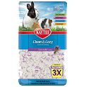
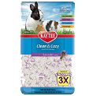
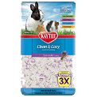

Dog Food
 Bedding 
Bedding We can only do what we do with your help! Any donation, big or small goes a long way to helping an animal in need.
Please send cheque or money order to:
Camelot Animal Sanctuary
P.O. Box 81245 RPO Concession
Hamilton, ON L9A 0A6
Even if you are unable to donate money or items to Camelot, there are still so many ways that you can help by donating your time. The best thing you can do for Camelot is to get the word out! Let people know about Camelot! Invite friends to like Camelot on Facebook. Follow us on Twitter and Instagram and help to share our stories! Or, become a Camelot foster home!
Camelot Animal Sanctuary is always in need of new or gently used pet items for our animals. If you would prefer to donate items you are welcome to!
You can drop items off at:
Camelot Animal Sanctuary
123 Main St West
Hamilton, ON L9A 0A6
Bedding 